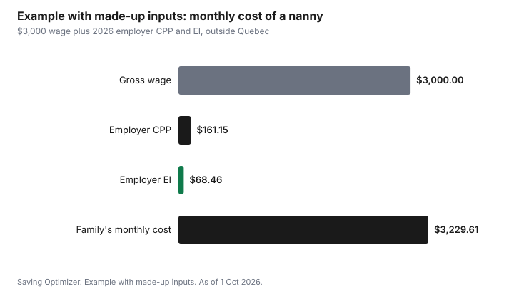

Kids · Canada
Hiring a Nanny in Canada: Payroll, CPP, EI and the Real Cost to Your Family

Hiring a nanny in Canada usually makes you an employer. The Canada Revenue Agency generally treats a caregiver who works in your home, on your schedule, as your employee, which means you register a payroll account, deduct CPP, EI and income tax from each pay, add your own employer share, remit it, and issue a T4. In 2026 the employer share alone is 5.95 percent CPP on earnings above the basic exemption and 2.282 percent EI outside Quebec. Provincial employment standards set minimum wage, overtime and vacation pay. The real cost is the gross wage plus those amounts, minus what the child care expense deduction saves you.
Key takeaways
- A nanny you direct, in your home, is generally your employee. Ask CRA for a ruling if you are unsure.
- 2026 CPP is 5.95 percent from both employee and employer on earnings between $3,500 and $74,600, plus CPP2 at 4 percent up to $85,000.
- 2026 EI outside Quebec: employee 1.63 percent, employer 2.282 percent, on insurable earnings up to $68,900. Quebec uses QPP and QPIP with its own rates.
- Provincial rules cover minimum wage, overtime, vacation pay and, in some provinces, workers' compensation. Check yours.
- Example with made-up inputs: a $3,000 monthly wage costs the family about $3,230 with employer CPP and EI.
Employee or self-employed?
CRA looks at the working relationship: who sets the hours and duties, who supplies the tools, and whether the worker runs a business. A nanny who cares for your children in your home, on your schedule, is generally an employee. A licensed home daycare that cares for several families' children in its own home is a business, and you pay it a fee. If you are not sure, CRA can issue a ruling on employment status. Getting this wrong can leave you owing both shares of CPP and EI later.
Payroll steps for a household employer
- Open a payroll program account with CRA before the first pay.
- Get the nanny's SIN and a completed TD1 (and the provincial TD1) to set income tax.
- On each pay, deduct CPP, EI and income tax. Use CRA's Payroll Deductions Online Calculator.
- Add your employer CPP (equal to the employee's) and employer EI (1.4 times the employee's).
- Remit to CRA by the due date, generally the 15th of the following month for a regular remitter.
- Issue a T4 slip and file the T4 return by the end of February.
| Item | Employee | Employer | Earnings range |
|---|---|---|---|
| CPP (base and first additional) | 5.95% | 5.95% | $3,500 basic exemption to $74,600 |
| CPP2 (second additional) | 4% | 4% | $74,600 to $85,000 |
| EI, outside Quebec | 1.63% | 2.282% | Up to $68,900 insurable earnings |
Provincial employment standards
Minimum wage, hours of work, overtime, public holidays and vacation pay are set by your province or territory, and domestic workers are generally covered. Read your province's employment standards page for domestic or live-in workers, which can have special rules about room and board, overtime or hours. A written agreement that lists duties, hours, pay, vacation and notice saves arguments later.
Workers' compensation also varies by province. In some provinces, coverage is required for domestic workers above a set number of hours. Check your provincial workers' compensation board before the first day.
Quebec employers
In Quebec, a household employer deducts Quebec Pension Plan contributions and Quebec Parental Insurance Plan premiums instead of CPP, along with a lower EI rate, and remits to Revenu Québec as well as CRA. Revenu Québec's employer pages have the rates and forms.
The child care expense deduction
Wages you pay a nanny for child care can count as child care expenses, up to $8,000 per child under 7, $5,000 for ages 7 to 16, and $11,000 for a child eligible for the disability tax credit. The deduction is generally claimed by the lower-income spouse. A receipt from an individual caregiver must show their SIN. The T778 guide covers the rules. In B.C., the Affordable Child Care Benefit has rates for care in the child's home; see the B.C. guide.
Example with made-up inputs: monthly cost of a $3,000 wage
These numbers are an example with made-up inputs, outside Quebec, for one month of a $36,000 annual wage paid monthly. Employer CPP is 5.95 percent of $3,000 less one-twelfth of the $3,500 exemption ($291.67), or about $161.15. Employer EI is 2.282 percent of $3,000, or about $68.46. The family's cost before any provincial items is about $3,229.61. The nanny's deductions come out of the $3,000; they are not an extra cost to you, but you must remit them.
| Line | Amount |
|---|---|
| Gross wage | $3,000.00 |
| Employer CPP (5.95% of $2,708.33) | $161.15 |
| Employer EI (2.282% of $3,000) | $68.46 |
| Family's monthly cost | $3,229.61 |

Add vacation pay, public holiday pay and any workers' compensation premium your province requires. Then compare the total with licensed options in the $10-a-day guide.
Sources
- CRA, CPP contribution rates, maximums and exemptions, as of 1 Oct 2026. 2026: 5.95 percent each, $3,500 basic exemption, $74,600 YMPE; CPP2 4 percent to $85,000.
- CRA, EI premium rates and maximums, as of 1 Oct 2026. 2026 outside Quebec: 1.63 percent employee, 2.282 percent employer, $68,900 maximum insurable earnings.
- CRA, payroll pages for employers, including hiring a caregiver, employment status rulings, remittance due dates and T4 filing.
- Income Tax Act, section 63, and CRA line 21400. Deduction limits; SIN on an individual caregiver's receipt.
- The $3,000 wage and the totals in the example table and chart are an example with made-up inputs.
Frequently asked questions
Is a nanny an employee in Canada?
Usually. CRA generally treats a caregiver who works in your home under your direction as your employee. That means you register a payroll account, deduct and remit CPP, EI and income tax, and issue a T4. CRA can rule on status if you are unsure.
How much CPP and EI do I pay for a nanny in 2026?
As the employer, you pay CPP equal to the employee's 5.95 percent on earnings between $3,500 and $74,600, plus CPP2 at 4 percent up to $85,000, and EI at 2.282 percent of insurable earnings up to $68,900 outside Quebec.
Can I claim my nanny's wages on my taxes?
Wages paid for child care can count under the child care expense deduction, up to $8,000 per child under 7, $5,000 for ages 7 to 16, and $11,000 for a child eligible for the disability tax credit. The receipt from an individual must show their SIN.
Do nannies get vacation pay and minimum wage?
Generally yes. Your province's employment standards set minimum wage, overtime, public holidays and vacation pay for domestic workers, sometimes with special rules for live-in workers. Check your province's page.
What is different for Quebec families hiring a nanny?
Quebec employers deduct QPP and QPIP instead of CPP, pay a lower EI rate, and remit to Revenu Québec as well as CRA. Check Revenu Québec's employer pages for the rates.
Researched and drafted with AI assistance and fact-checked against official Canadian sources. How we create content.
Disclosure: Payroll services are an offer type; none is named or ranked. Saving Optimizer may earn a commission if a partner link is added later; no partnership is claimed. Education only. This is not tax, payroll or legal advice.